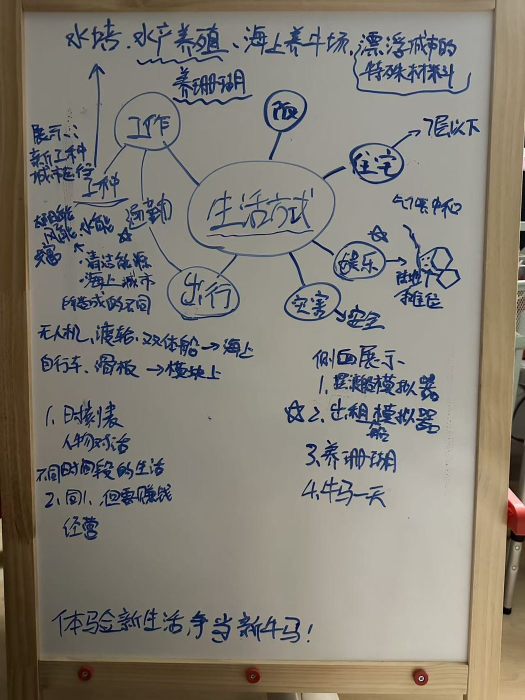
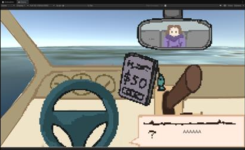
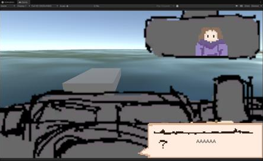

Problem
At the beginning of this semester, our project ran into major problems. The transformation goal was considered unclear, and the project scope was too broad and overloaded with content.
Thinking
- The blueprint came before the theme. The project blueprint appeared before we properly researched the transformation. I did not keep an open design mindset; instead, I kept trying to "attach" transformation theory onto an already-formed project. The theory existed only on the surface, like sticky notes pasted on top, rather than acting as the core structure that connects everything.
- Poor scope control. At the start, I had unrealistic ambitions. When switching between multiple tasks, I often lost focus. I also failed to reflect and reduce the scope in time, and kept believing I could manage everything even as the project became chaotic.
- Not enough team communication. I was the only designer and the only programmer on multiple projects. Being the only programmer was unavoidable, but being the only designer was my responsibility as the lead designer: I should have adjusted the project scope based on the team's design abilities, broken down design tasks earlier, and predicted possible problems with clear proposals.
- Time management. I am bad at scheduling, so it should have been handled by other team members. But because I failed to clearly communicate the full vision of the project, team members who were not involved in planning did not understand the details and felt more like outsourced workers. I should have supported them and involved them more in the planning process.
Decision: A New Direction
- After feeling stuck while revising the project, I booked office hours with Professor Douglas, who clearly explained the project requirements and working approach and gave us concrete, effective advice.
- On the same day, the team held an urgent discussion and developed a new direction: we kept the original inspiration of a floating city, but shifted focus to individual people and problems we could realistically address. I shared all the floating-city research I had collected, and through discussion we narrowed the scope to work and transportation. This led to the early concept of a "water taxi driver", and everyone contributed ideas.
- The new concept: the player drives a water taxi between different modules of a floating city and learns about different aspects of city life by talking with passengers. The core systems are boat navigation and conversations with passengers.



Decision: Team and Process
- Started using Jira's Scrum framework to guide development: organized systems as Epics, then created user stories, assigned tasks and set system owners. Revisiting these methods from a previous semester helped me a lot.
Prototype
As the programmer, I built a very simple prototype for the core gameplay. The boat interior exists as the UI, while the player can see the 3D ocean surface and port buildings through the windows.
- Ocean: worried that using Unity Asset Store assets directly would bloat the project, I followed a tutorial by DitzelGames that creates an ocean mesh by moving points on the surface and layering wave functions, so I could generate dynamic oceans of any size, and I learned how to make an ocean material. Our 3D artist suggested parameter adjustments, helped find suitable colors, and proposed different ocean materials for different times of day. Rather than switching materials abruptly, I think a smoother approach is to use time as a variable in a transition function.
- Reused systems: I reused the scene transition system and dialogue management system from my previous narrative projects. The dialogue system uses articy:draft X as its database; my previous implementation was incomplete and still needs to be adapted to this project.
Driving Design
- Cockpit view: in a discussion with the art team, we found the original cockpit view was too high, making the player feel like they were sitting on the ground looking up. Using real-world motorboats and the perspective of Euro Truck Simulator as references, we redesigned a wider and more comfortable cockpit layout.


- Controls: I explored different approaches to boat handling and decided to focus on a motorboat-style control model. Since I have no real boating experience, I plan to gather design principles from several sources: watching motorboat driving videos to understand the feel, studying tutorials to learn the basic principles and physics, and asking people with real boating experience to clarify details.
- Design principle: this is not a "boat driving simulator", and the simulation depth should not aim to match Euro Truck Simulator. The goal is a convincing sense of boat control with as few rules as possible, to support immersion. At the same time, driving should not overshadow the core experience: inside the boat, the player's attention should stay on conversations with passengers.
Next Steps
- Propose several control schemes based on these two goals and keep the one that performs best.
- Use the team's completed research on transformation pain points as a foundation to finalize the system designs and build greybox versions of the core systems.
Original post: Devlog-Yunhao-Jan21, itch.io, 2026.01.21. Tutorials: DitzelGames ocean tutorial, The Code Otter scene transition tutorial.